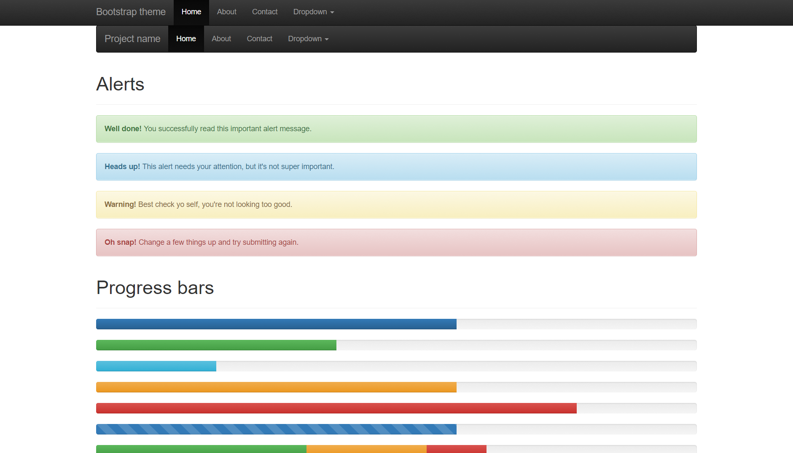
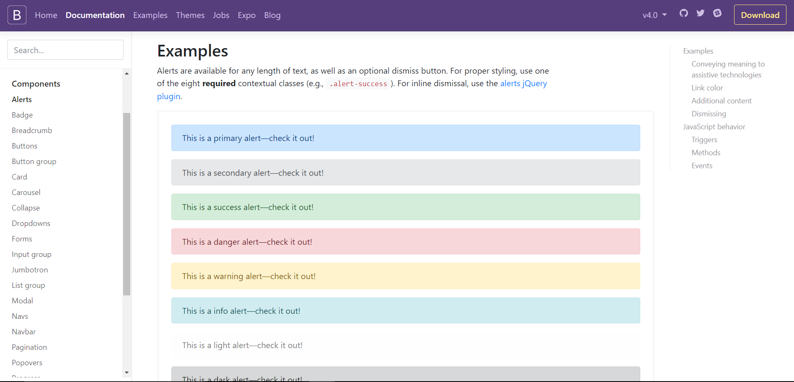
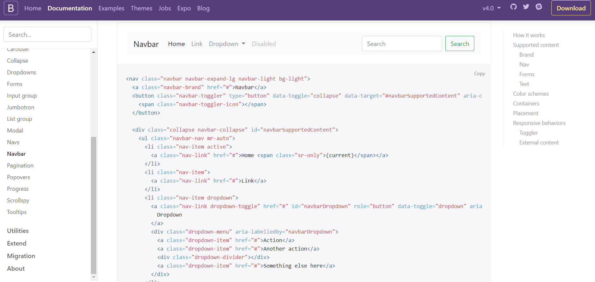
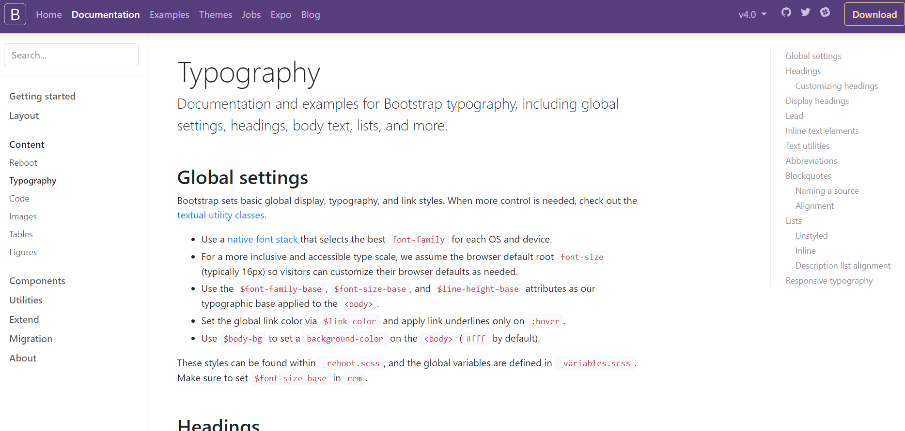

Libraries & frameworks
At this point you've got some vanilla JavaScript under your belt, yeah? You know what variables are and how to declare them, you can manipulate the data stored in those variables, you can create methods that can use those variables to do neat stuff, and you have a pretty solid grounding in concepts like iteration and recursion. Overall, a nice foundation from which to springboard should you want.
But maybe that's not what you 'want,' yes? Maybe programming just isn't your bag; maybe you're not interested in programming for programming's sake; maybe you just want to get stuff done.
I'm not one to judge. I get it. Programming is difficult even on the best of days. JavaScript is a necessary component in the frontend world, so, there's really no way to avoid it, but sometimes--well, most times--you just want something to happen without having to write it yourself, test it, troubleshoot it, fix it, test it again, troubleshoot some more, fix it, yet again, test it, convince yourself that it's good enough and that you'll get back to it later, etc. etc.
There are billions of sites out there on the internet and most of them provide some level of interactivity, right? I mean here's some examples of a basic slideshow that I shamelessly stole from the internet.
They all kind of look the same. They all kind of function the same. They are--in essence--the same. Now, there is the possiblity that each of the developers for these three different sites rolled their own JavaScript to create these slideshows, endlessly slaving away over a keyboard for hours on end until every little bit was absolute perfection. I'm guessing, however, that that wasn't the case. You see, one of the more pervasive mantras in programming is "don't repeat yourself." We might have talked about this a bit when we talked of functions/methods. Code is code; once it's written it's an endless resource, right? I mean, you don't 'use' up a function. You don't have to watch your 'method' gauge to make sure you have enough 'method' in the 'method' tank before you load your site--shut up, it's the best I could come up with. So, if code is an endlessly reusable resource, why would you go through the trouble of writing and rewriting all the code that is required to slap a slideshow on a page everytime you want to slap a slideshow on a page? You wouldn't. Why reinvent the wheel everytime you need a wheel? Code is also pretty generic and--assuming it's written correctly--can often be adapted easily to different projects or purposes. All you have to do is remember where you put it.
Libraries
In JavaScript, the way we do that is by working with libraries. A library is a collection of functions/methods--all relatively generic and customizable--that you can use to do stuff on your site.
Sometimes that library is just the stuff that you've done personally. Code that you've written for one project that you think might work in another. You may, or may not--you really should--have documentation that goes along with it that explains how it works and how to use it. It's for your personal use only; a repository of useful stuff; a frontend toolbox, so to speak.
The neat thing is that there are all kinds of programmers and developers out there that have created libraries of their own and are willing to share that with the rest of us. They host the source code, they maintain the documentation, they create the 'wheel,' and let us borrow it whenever we need to get somewhere fast.
One of the more popular JavaScript libraries is jQuery. jQuery is a 'fast, small, and feature-rich JavaScript libary' designed to--well, make a developer's life a bit easier when faced with a specific problem or task. It is a toolkit that contains all the necessary code for simplifying basic--and individual--JavaScript functionality including things like DOM manipulation, event handling, AJAX (asynchronous JavaScript), animations, etc.
There are--generally--two ways to incorporate a library like jQuery into your project:
- CDN - content delivery network. The library is hosted elsewhere and you use a public URL as a link in your HTML.
<script type = "text/javascript" src = "https://ajax.googleapis.com/ajax/libs/jquery/2.1.3/jquery.min.js"></script>
The benefit is that your implementation is always up to date. It's available, it's secure, and--most importantly--it's not yours to manage. You don't have to worry about it. Of course, there are a few downsides in that an update may 'break' something on your site, but the likelihood of that happening on an update is insignificant...well, small...well, not likely...well, probably not going to happen...maybe.
- Local - You download the library--or relevant part of the library you want to use--and include it in your development code base. You use a relative link in the HTML.
<script type = "text/javascript" src = "/jquery/jquery-2.1.3.min.js"></script>
The benefit to this approach is you are in complete control. In most cases, you can download only what you want to and it's always going to work as expected because you've included a copy of the source library with the project. The downside is that you are in complete control. You are responsible for updating, you are responsible for security, and you are responsible for it working because it's a part of your project.
So, how about a demonstration? I have a local installation of jQuery on the site. I've linked out to it using a relative link in the <head> element in the code and have created a hierarchy for the button (e.g. a container, the actual button, the content that goes in the popup, etc.). When you click the button, a popup, or modal, will appear. My styling rules still apply (the <h4> element is still that pleasing shade of blue-green, I can still turn text green, etc.) and I included some additonal information in the body.
And here's the code:
<p><div class="container"> <button type="button" class="btn btn-info btn-lg" data-toggle="modal" data-target="#myModal">Click me!</button> <div class="modal fade" id="myModal" role="dialog"> <div class="modal-dialog"> <div class="modal-content"> <div class="modal-header"> <button type="button" class="close" data-dismiss="modal">×</button> <h4 class="modal-title">Bam! I'm a modal, or popup.</h4> </div> <div class="modal-body"> <p>I did--basically--no work to create this. The library is doing all the work for me. I only had to apply the right classes to the right <span class="greenText"><div></span> elements.</p> </div> <div class="modal-footer"> <button type="button" class="btn btn-default" data-dismiss="modal">Close</button> </div> </div> </div> </div> </div></p>
To get this to work, I wrote absolutely no JavaScript. I created a button and a few different containers for content in my HTML and then let my CSS and JavaScript library do all the heavy lifting. Styling and functionality is controlled by applying distinct classes to the different containers.
Remember that slideshow?
And the code:
<div class="container"> <div class="row"> <div class="col-md-12"> <div id="carousel-example-generic" class="carousel slide" data-ride="carousel"> <ol class="carousel-indicators"> <li data-target="#carousel-example-generic" data-slide-to="0" class="active"></li> <li data-target="#carousel-example-generic" data-slide-to="1"></li> <li data-target="#carousel-example-generic" data-slide-to="2"></li> </ol> <div class="carousel-inner" role="listbox"> <div class="item active"> <img src="images/carousel1.jpg" alt=""> <div class="carousel-caption"> <h1>Wow, how pretty!</h1> <p>Caption for the prettiness.</p> </div> </div> <div class="item"> <img src="images/carousel2.jpg" alt=""> <div class="carousel-caption"> <h1>Some wall. Some where.</h1> <p>Kind of dark, but still pretty, right?</p> </div> </div> <div class="item"> <img src="images/carousel3.png" alt=""> <div class="carousel-caption"> <h1>Weird grass houses.</h1> <p>Strange, but I kind of like them.</p> </div> </div> </div> <a class="left carousel-control" href="#carousel-example-generic" role="button" data-slide="prev"> <span class="glyphicon glyphicon-chevron-left" aria-hidden="true"></span> <span class="sr-only">Previous</span> </a> <a class="right carousel-control" href="#carousel-example-generic" role="button" data-slide="next"> <span class="glyphicon glyphicon-chevron-right" aria-hidden="true"></span> <span class="sr-only">Next</span> </a> </div> </div> </div> </div>
Again, no JavaScript written. It's just a bunch of containers with classes.
So, you can see the advantages to this, yes? You get the benefit of using JavaScript without actually having to write any actual JavaScript. You only link, or import, the libraries--or parts of libraries--that do what you want to do and then you do it. By default, most libraries are full featured powerhouses designed with a specific purpose or for a specific use, which they do...extremely well. Most of them are also flexible enough that you can customize them to fit your individual project. Some you pay for, most are free (licensed under the MIT license | Open Source Initiative). The two examples above were created using jQuery and Bootstrap (a framework that we're going to talk about in just second), but there are tons of different libraries out there that you can use for all kinds of different things.
Here's a brief list.
- Galleria - Maybe you don't want to use Bootstrap. Here's Galleria, a free image gallery that you can use to create beautiful slideshows. It also does video of all kinds and is 100% responsive, so, that's terribly useful.
- Bounce.js - Worried about JavaScript animations on mobile platforms. Bounce.js uses JavaScript to export animations as CSS.
- dojo - a full featured JavaScript library. UI components, code optimization, JSON support, AJAX support, etc. Build web sites, web apps, mobile stuff, whatever.
- React - One of the more famous ones. React builds user interfaces. Facebook's baby, React is designed to create fast, simple, and scalable user interfaces for a variety of applications. Because it's a Facebook thing, there are more than few detractors out there--not W3C compliant, poor documentation and support, etc.--but it is incredibly popular, so, it might not be a bad idea to be, at least, familiar with it.
- Vue - another library for building user interfaces. Cross platform, easy integration with other libraries, lots of different components that can be used together or individually, and extensive support make it a viable option in the face of the React-juggernaut.
- Chart.js - Need a chart? Chart.js is a library for creating eye-catching, interactive, and animated charts of all kinds.
- Leaflet - Like the mobile ecosystem better? Need a map? Leaflet lets you create mobile-friendly, interactive maps. Custom icons, geolocation features, video integration...I've never used it, but it seems to have a lot going on there.
So, as you can see there are a lot of different libraries out there that cover a lot of different things, right? The thing is, however, even if the programming thing is your thing, you could probably benefit from looking at a library or two. Most of them are open source, which means you have access to the raw code. There are no secrets, so, dig into them, find out how they work, and add to your JavaScript know-how.
Libraries--by and large--are meant to focus on one specific purpose or use. Charts, maps, animations, user interface issues, data control, etc. If you're looking for something a bit more, something a bit more robust then you might be looking for a framework.
Frameworks
A framework is a scaffold. It is an environment consisting of a bunch of built-in bits of functionality that you can use to help you put together your project faster. It is a luxury car. It provides all the bells and whistles even if you don't necessarily know how to use them. And they're stupid easy to use. You just download them. Most come with a predefined file hierarchy into which you plug your stuff and all the necessary relationships already in place.
There are all kinds of different frameworks, each with a different focus depending on its application. In the frontend world, frameworks focus on HTML, CSS, and JavaScript, but there are also frameworks for software development, backend development, etc., each containing sets of predefined protocols, rules, standards, and guidelines designed to do most of the repetitive and difficult foundational work of development, leaving you to focus on other things.
Wait. This sounds suspiciously like a library. What exactly is the difference then?
Inversion of Control
The line of demarcation between the two has been blurred quite a bit the last few years, but--in general--the difference centers around this idea of 'Inversion of Control,' which I've also seen referred to as the 'Hollywood Principle' (i.e. 'Don't call us, we'll call you).
When you use a library, you are--largely--in control, right? The library is just a collection of functions (class definitions) that you--as the developer--call. Its primary purpose is to serve as a vehicle for code reuse and nothing more. Think of it terms of a real library (of which I am very familiar, right?). You go to the library and there are tons of books on just about every subject. If you need a book on Buddhism or Thomas Jefferson, you can usually find a half dozen (more depending on the size of the library) different books on the subject. If you don't like one, you just put it back on the shelf (you really shouldn't, by the way, but that's neither here nor there) and get another one. Eventually, you'll find one that works for what you want to do. It's a supplement to your work that you have almost total control over.
A framework might contain several different libraries, but these libraries only have one book on Buddhism or one book on Jefferson. If you want the framework's help, that's the book you're going to use, no bones about it. If you don't like that one book, well...tough. That's the book; take it or leave it. It's a mold that you have to shape your work to fit and you have almost no control over it.

This site, for example and as previously mentioned, was built using Bootstrap, which is--by far--one of the most popular frontend frameworks out there. It has all the basic foundational stuff (like grid column setups, relative sizing, etc.) to build a responsive site quick and easy. I don't have to worry about setting up my own CSS or JavaScript to make my site look good on different devices as Bootstrap does all the heavy lifting for me. Bootstrap also provides support for preprocessors, features built-in templates and an icon set with a ton of support in the community in the way of documentation and third-party plugins. They've given me all the tools I need, I just need to use them. But those are the only tools I can use without breaking the framework.
So, don't tell me. Show me, right?
Back to frameworks




Where a library might focus on something specific (e.g. typography, navigation bars, ui components, etc.), a framework contains all of that and then some, right? All built-in, all ready to use, and all designed to work seamlessly with one another. Buttons, for instance, are all styled using the same design aesthetics.
Animated alerts all follow the same schema.
There's always a downside, isn't there?
You see what I mean? And herein lies the problem with a framework--and really libraries as well. They're great if you need to get something up and running and you're not too worried about customization. You have the framework, you slap some of your stuff in it where it fits and--bam!--you've got a website. You link a library and--bam!--instant form validation, or slideshow, or whatever. That convenience, however, comes at a price that you may--or may not--be willing to pay. Bootstrap, for instance, doesn't follow modern best practices. Every bit of style and functionality comes thorugh the use of 'classes,' which means <div> elements...everywhere, which is the exact antithesis of what HTML5 is trying to accomplish with its focus on semantic elements. If you've got a site already in place and try to overlay Bootstrap to get some of those sweet, sweet features, you're going to have a bad time. Bootstrap doesn't play nice with others and will likely mess up or break your design aesthetic. It's code heavy. Even if you don't use 95% of it, you still have to carry that 95% in your code base. It's popular, which means everyone is using it, which means if you use it, you look like everybody else. You can certainly customize specific elements, but as the framework is so interdependent, applying a new style to an element may change other elements or have other unintended consequences. Plus, if you're going to want to customize a bunch of stuff anyway, then what's the point of using the framework in the first place, right?
I've used Bootstrap as my scapegoat, but the idea is--generally--the same concerning all frameworks. Libraries are a bit better in that they tend to have this one, specific focus and are, typically, designed to play well with others, but even they suffer from--to a lesser degree, to be sure--the same shortcomings. Frameworks are fantastically complex playgrounds with a lot of really neat toys to mess around with, but the toys don't leave the playground, it's not a good idea to bring your own, and the toys all follow you around whether you play with them or not...okay, I kind of lost the thread there, but you get what I'm trying to say, yeah? Libraries are a bit more flexible in that you get to take the toys home, but even then you often end up with a whole box full of stuff you don't want and tailoring it specifically to your project can be a bit of a pain sometimes--depending on how well the library is written.
Don't get me wrong, libraries and frameworks aren't inherently evil. This website, is built on a framework and it's awesome...right? And, like with WordPress, a little bit of experience with a popular framework (e.g. Bootstrap, Foundation, Angular.js, etc.) or a popular library (e.g. jQuery, Meteor, of PhoneGap) will get you a long way. At some point, however, you might find it easier to roll your own rather than bum from someone else.